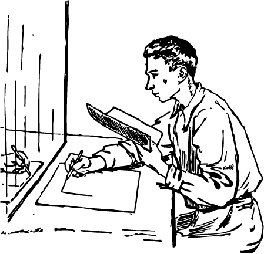
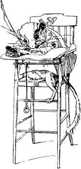
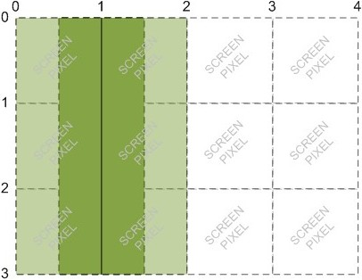
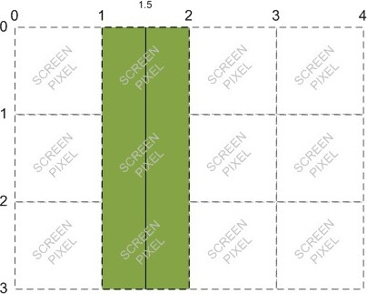
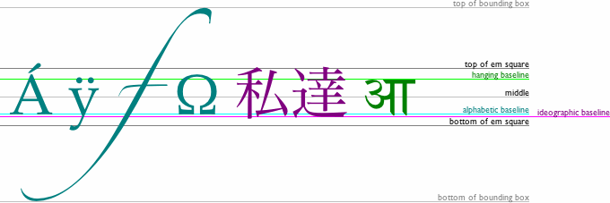
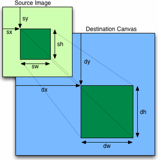

You are here: Home Dive Into HTML5
HTML 5 defines the <canvas> element as “a resolution-dependent bitmap canvas which can be used for rendering graphs, game graphics, or other visual images on the fly.” A canvas is a rectangle in your page where you can use JavaScript to draw anything you want.
| IE | Firefox | Safari | Chrome | Opera | iPhone | Android |
|---|---|---|---|---|---|---|
| 7.0+* | 3.0+ | 3.0+ | 3.0+ | 10.0+ | 1.0+ | 1.0+ |
* Internet Explorer 7 and 8 require the third-party explorercanvas library. Internet Explorer 9 supports <canvas> natively.
| ||||||
So what does a canvas look like? Nothing, really. A <canvas> element has no content and no border of its own.
Invisible canvas
The markup looks like this:
<canvas width="300" height="225"></canvas>Let’s add a dotted border so we can see what we’re dealing with.
Canvas with border
You can have more than one <canvas> element on the same page. Each canvas will show up in the DOM, and each canvas maintains its own state. If you give each canvas an id attribute, you can access them just like any other element.
Let’s expand that markup to include an id attribute:
<canvas id="a" width="300" height="225"></canvas>Now you can easily find that <canvas> element in the DOM.
var a_canvas = document.getElementById("a");
| IE | Firefox | Safari | Chrome | Opera | iPhone | Android |
|---|---|---|---|---|---|---|
| 7.0+* | 3.0+ | 3.0+ | 3.0+ | 10.0+ | 1.0+ | 1.0+ |
* Internet Explorer 7 and 8 require the third-party explorercanvas library. Internet Explorer 9 supports <canvas> shapes natively.
| ||||||
Every canvas starts out blank. That’s boring! Let’s draw something.
The onclick handler called this function:
function draw_b() {
var b_canvas = document.getElementById("b");
var b_context = b_canvas.getContext("2d");
b_context.fillRect(50, 25, 150, 100);
}The 1st line of the function is nothing special; it just finds the <canvas> element in the DOM.
And then there’s this
function draw_b() {
var b_canvas = document.getElementById("b");
var b_context = b_canvas.getContext("2d");
b_context.fillRect(50, 25, 150, 100);
}
Every canvas has a drawing context, which is where all the fun stuff happens. Once you’ve found a <canvas> element in the DOM (by using document.getElementById() or any other method you like), you call its getContext() method. You must pass the string "2d" to the getContext() method.
Q: Is there a 3-D canvas?
A: Not yet. Individual vendors have experimented with their own three-dimensional canvas APIs, but none of them have been standardized. The HTML5 specification notes, “A future version of this specification will probably define a 3d context.”
So, you have a <canvas> element, and you have its drawing context. The drawing context is where all the drawing methods and properties are defined. There’s a whole group of properties and methods devoted to drawing rectangles:
fillStyle property can be a CSS color, a pattern, or a gradient. (More on gradients shortly.) The default fillStyle is solid black, but you can set it to whatever you like. Each drawing context remembers its own properties as long as the page is open, unless you do something to reset it.
fillRect(x, y, width, height) draws a rectangle filled with the current fill style.
strokeStyle property is like fillStyle — it can be a CSS color, a pattern, or a gradient.
strokeRect(x, y, width, height) draws an rectangle with the current stroke style. strokeRect doesn’t fill in the middle; it just draws the edges.
clearRect(x, y, width, height) clears the pixels in the specified rectangle.
Q: Can I “reset” a canvas?
A: Yes. Setting the width or height of a<canvas>element will erase its contents and reset all the properties of its drawing context to their default values. You don’t even need to change the width; you can simply set it to its current value, like this:var b_canvas = document.getElementById("b"); b_canvas.width = b_canvas.width;
Getting back to that code sample in the previous example…
Draw a rectangle
var b_canvas = document.getElementById("b");
var b_context = b_canvas.getContext("2d");
b_context.fillRect(50, 25, 150, 100);Calling the fillRect() method draws the rectangle and fills it with the current fill style, which is black until you change it. The rectangle is bounded by its upper-left corner (50, 25), its width (150), and its height (100). To get a better picture of how that works, let’s look at the canvas coordinate system.
The canvas is a two-dimensional grid. The coordinate (0, 0) is at the upper-left corner of the canvas. Along the X-axis, values increase towards the right edge of the canvas. Along the Y-axis, values increase towards the bottom edge of the canvas.
Canvas coordinates diagram
That coordinate diagram was drawn with a <canvas> element. It comprises
First, we need to define the <canvas> element itself. The <canvas> element defines the width and height, and the id so we can find it later.
<canvas id="c" width="500" height="375"></canvas>Then we need a script to find the <canvas> element in the DOM and get its drawing context.
var c_canvas = document.getElementById("c");
var context = c_canvas.getContext("2d");Now we can start drawing lines.
| IE | Firefox | Safari | Chrome | Opera | iPhone | Android |
|---|---|---|---|---|---|---|
| 7.0+* | 3.0+ | 3.0+ | 3.0+ | 10.0+ | 1.0+ | 1.0+ |
* Internet Explorer 7 and 8 require the third-party explorercanvas library. Internet Explorer 9 supports <canvas> paths natively.
| ||||||

Imagine you’re drawing a picture in ink. You don’t want to just dive in and start drawing with ink, because you might make a mistake. Instead, you sketch the lines and curves with a pencil, and once you’re happy with it, you trace over your sketch in ink.
Each canvas has a path. Defining the path is like drawing with a pencil. You can draw whatever you like, but it won’t be part of the finished product until you pick up the quill and trace over your path in ink.
To draw straight lines in pencil, you use the following two methods:
moveTo(x, y) moves the pencil to the specified starting point.
lineTo(x, y) draws a line to the specified ending point.
The more you call moveTo() and lineTo(), the bigger the path gets. These are “pencil” methods — you can call them as often as you like, but you won’t see anything on the canvas until you call one of the “ink” methods.
Let’s begin by drawing the off-white grid.
for (var x = 0.5; x < 500; x += 10) {
context.moveTo(x, 0);
context.lineTo(x, 375);
}Draw vertical lines
for (var y = 0.5; y < 375; y += 10) {
context.moveTo(0, y);
context.lineTo(500, y);
}Draw horizontal lines
Those were all “pencil” methods. Nothing has actually been drawn on the canvas yet. We need an “ink” method to make it permanent.
context.strokeStyle = "#eee";
context.stroke();stroke() is one of the “ink” methods. It takes the complex path you defined with all those moveTo() and lineTo() calls, and actually draws it on the canvas. The strokeStyle controls the color of the lines. This is the result:
Q: Why did you start x and y at
0.5? Why not0?
A: Imagine each pixel as a large square. The whole-number coordinates (0, 1, 2…) are the edges of the squares. If you draw a one-unit-wide line between whole-number coordinates, it will overlap opposite sides of the pixel square, and the resulting line will be drawn two pixels wide. To draw a line that is only one pixel wide, you need to shift the coordinates by 0.5 perpendicular to the line's direction.For example, if you try to draw a line from
(1, 0)to(1, 3), the browser will draw a line covering 0.5 screen pixels on either side ofx=1. The screen can’t display half a pixel, so it expands the line to cover a total of two pixels:
But, if you try to draw a line from
(1.5, 0)to(1.5, 3), the browser will draw a line covering 0.5 screen pixels on either side ofx=1.5, which results in a true 1-pixel-wide line:
Thanks to Jason Johnson for providing these diagrams.
Now let’s draw the horizontal arrow. All the lines and curves on a path are drawn in the same color (or gradient — yes, we’ll get to those soon). We want to draw the arrow in a different color ink — black instead of off-white — so we need to start a new path.
A new path
context.beginPath();
context.moveTo(0, 40);
context.lineTo(240, 40);
context.moveTo(260, 40);
context.lineTo(500, 40);
context.moveTo(495, 35);
context.lineTo(500, 40);
context.lineTo(495, 45);The vertical arrow looks much the same. Since the vertical arrow is the same color as the horizontal arrow, we do not need to start another new path. The two arrows will be part of the same path.
context.moveTo(60, 0);
context.lineTo(60, 153);
context.moveTo(60, 173);
context.lineTo(60, 375);
context.moveTo(65, 370);
context.lineTo(60, 375);
context.lineTo(55, 370);Not a new path
I said these arrows were going to be black, but the strokeStyle is still off-white. (The fillStyle and strokeStyle don’t get reset when you start a new path.) That’s OK, because we’ve just run a series of “pencil” methods. But before we draw it for real, in “ink,” we need to set the strokeStyle to black. Otherwise, these two arrows will be off-white, and we’ll hardly be able to see them! The following lines change the color to black and draw the lines on the canvas:
context.strokeStyle = "#000";
context.stroke();This is the result:
| IE | Firefox | Safari | Chrome | Opera | iPhone | Android |
|---|---|---|---|---|---|---|
| 7.0+* | 3.0+† | 3.0+ | 3.0+ | 10.0+ | 1.0+ | 1.0+ |
| * Internet Explorer 7 and 8 require the third-party explorercanvas library. Internet Explorer 9 supports canvas text natively. | ||||||
| † Mozilla Firefox 3.0 requires a compatibility shim. | ||||||
In addition to drawing lines on a canvas, you can also draw text on a canvas. Unlike text on the surrounding web page, there is no box model. That means none of the familiar CSS layout techniques are available: no floats, no margins, no padding, no word wrapping. (Maybe you think that’s a good thing!) You can set a few font attributes, then you pick a point on the canvas and draw your text there.
The following font attributes are available on the drawing context:
font can be anything you would put in a CSS font rule. That includes font style, font variant, font weight, font size, line height, and font family.
textAlign controls text alignment. It is similar (but not identical) to a CSS text-align rule. Possible values are start, end, left, right, and center.
textBaseline controls where the text is drawn relative to the starting point. Possible values are top, hanging, middle, alphabetic, ideographic, or bottom.
textBaseline is tricky, because text is tricky (English text isn’t, but you can draw any Unicode character you like on a canvas, and Unicode is tricky). The HTML5 specification explains the different text baselines:
The top of the em square is roughly at the top of the glyphs in a font, the hanging baseline is where some glyphs like आ are anchored, the middle is half-way between the top of the em square and the bottom of the em square, the alphabetic baseline is where characters like Á, ÿ, f, and Ω are anchored, the ideographic baseline is where glyphs like 私 and 達 are anchored, and the bottom of the em square is roughly at the bottom of the glyphs in a font. The top and bottom of the bounding box can be far from these baselines, due to glyphs extending far outside the em square.

For simple alphabets like English, you can safely stick with top, middle, or bottom for the textBaseline property.
Let’s draw some text! Text drawn inside the canvas inherits the font size and style of the <canvas> element itself, but you can override this by setting the font property on the drawing context.
context.font = "bold 12px sans-serif";
context.fillText("x", 248, 43);
context.fillText("y", 58, 165);Change the font style
The fillText() method draws the actual text.
context.font = "bold 12px sans-serif";
context.fillText("x", 248, 43);
context.fillText("y", 58, 165);Draw the text
Q: Can I use relative font sizes to draw text on a canvas?
A: Yes. Like every other HTML element on your page, the<canvas>element itself has a computed font size based on your page’s CSS rules. If you set thecontext.fontproperty to a relative font size like1.5emor150%, your browser multiplies this by the computed font size of the<canvas>element itself.
For the text in the upper-left corner, let’s say I want the top of the text to be at y=5. But I’m lazy — I don’t want to measure the height of the text and calculate the baseline. Instead, I can set textBaseline to top and pass in the upper-left coordinate of the text’s bounding box.
context.textBaseline = "top";
context.fillText("( 0 , 0 )", 8, 5);Now for the text in the lower-right corner. Let’s say I want the bottom-right corner of the text to be at coordinates (492,370) — just a few pixels away from the bottom-right corner of the canvas — but I don’t want to measure the width or height of the text. I can set textAlign to right and textBaseline to bottom, then call fillText() with the bottom-right coordinates of the text’s bounding box.
context.textAlign = "right";
context.textBaseline = "bottom";
context.fillText("( 500 , 375 )", 492, 370);And this is the result:
Oops! We forgot the dots in the corners. We’ll see how to draw circles a little later. For now, I’ll cheat a little and draw them as rectangles.
context.fillRect(0, 0, 3, 3);
context.fillRect(497, 372, 3, 3);Draw two “dots”
And that’s all she wrote! Here is the final product:
| IE | Firefox | Safari | Chrome | Opera | iPhone | Android | |
|---|---|---|---|---|---|---|---|
| linear gradients | 7.0+* | 3.0+ | 3.0+ | 3.0+ | 10.0+ | 1.0+ | 1.0+ |
| radial gradients | 9.0+ | 3.0+ | 3.0+ | 3.0+ | 10.0+ | 1.0+ | 1.0+ |
* Internet Explorer 7 and 8 require the third-party explorercanvas library. Internet Explorer 9 supports <canvas> gradients natively.
| |||||||
Earlier in this chapter, you learned how to draw a rectangle filled with a solid color, then a line stroked with a solid color. But shapes and lines aren’t limited to solid colors. You can do all kinds of magic with gradients. Let’s look at an example.
The markup looks the same as any other canvas.
<canvas id="d" width="300" height="225"></canvas>First, we need to find the <canvas> element and its drawing context.
var d_canvas = document.getElementById("d");
var context = d_canvas.getContext("2d");Once we have the drawing context, we can start to define a gradient. A gradient is a smooth transition between two or more colors. The canvas drawing context supports two types of gradients:
createLinearGradient(x0, y0, x1, y1) paints along a line from (x0, y0) to (x1, y1).
createRadialGradient(x0, y0, r0, x1, y1, r1) paints along a cone between two circles. The first three parameters represent the start circle, with origin (x0, y0) and radius r0. The last three parameters represent the end circle, with origin (x1, y1) and radius r1.
Let’s make a linear gradient. Gradients can be any size, but I’ll make this gradient be 300 pixels wide, like the canvas.
Create a gradient object
var my_gradient = context.createLinearGradient(0, 0, 300, 0);Because the y values (the 2nd and 4th parameters) are both 0, this gradient will shade evenly from left to right.
Once we have a gradient object, we can define the gradient’s colors. A gradient has two or more color stops. Color stops can be anywhere along the gradient. To add a color stop, you need to specify its position along the gradient. Gradient positions can be anywhere between 0 to 1.
Let’s define a gradient that shades from black to white.
my_gradient.addColorStop(0, "black");
my_gradient.addColorStop(1, "white");Defining a gradient doesn’t draw anything on the canvas. It’s just an object tucked away in memory somewhere. To draw a gradient, you set your fillStyle to the gradient and draw a shape, like a rectangle or a line.
Fill style is a gradient
context.fillStyle = my_gradient;
context.fillRect(0, 0, 300, 225);And this is the result:
Suppose you want a gradient that shades from top to bottom. When you create the gradient object, keep the x values (1st and 3rd parameters) constant, and make the y values (2nd and 4th parameters) range from 0 to the height of the canvas.
x values are 0, y values vary
var my_gradient = context.createLinearGradient(0, 0, 0, 225);
my_gradient.addColorStop(0, "black");
my_gradient.addColorStop(1, "white");
context.fillStyle = my_gradient;
context.fillRect(0, 0, 300, 225);And this is the result:
You can also create gradients along a diagonal.
both x and y values vary
var my_gradient = context.createLinearGradient(0, 0, 300, 225);
my_gradient.addColorStop(0, "black");
my_gradient.addColorStop(1, "white");
context.fillStyle = my_gradient;
context.fillRect(0, 0, 300, 225);And this is the result:
| IE | Firefox | Safari | Chrome | Opera | iPhone | Android |
|---|---|---|---|---|---|---|
| 7.0+* | 3.0+ | 3.0+ | 3.0+ | 10.0+ | 1.0+ | 1.0+ |
* Internet Explorer 7 and 8 require the third-party explorercanvas library. Internet Explorer 9 supports <canvas> images natively.
| ||||||
Here is a cat:
An <img> element
Here is the same cat, drawn on a canvas:
A <canvas> element
The canvas drawing context defines a drawImage() method for drawing an image on a canvas. The method can take three, five, or nine arguments.
drawImage(image, dx, dy) takes an image and draws it on the canvas. The given coordinates (dx, dy) will be the upper-left corner of the image. Coordinates (0, 0) would draw the image at the upper-left corner of the canvas.
drawImage(image, dx, dy, dw, dh) takes an image, scales it to a width of dw and a height of dh, and draws it on the canvas at coordinates (dx, dy).
drawImage(image, sx, sy, sw, sh, dx, dy, dw, dh) takes an image, clips it to the rectangle (sx, sy, sw, sh), scales it to dimensions (dw, dh), and draws it on the canvas at coordinates (dx, dy).
The HTML5 specification explains the drawImage() parameters:
The source rectangle is the rectangle [within the source image] whose corners are the four points
(sx, sy),(sx+sw, sy),(sx+sw, sy+sh),(sx, sy+sh).The destination rectangle is the rectangle [within the canvas] whose corners are the four points
(dx, dy),(dx+dw, dy),(dx+dw, dy+dh),(dx, dy+dh).
To draw an image on a canvas, you need an image. The image can be an existing <img> element, or you can create an Image() object with JavaScript. Either way, you need to ensure that the image is fully loaded before you can draw it on the canvas.
If you’re using an existing <img> element, you can safely draw it on the canvas during the window.onload event.
using an <img> element
<img id="cat" src="images/cat.png" alt="sleeping cat" width="177" height="113">
<canvas id="e" width="177" height="113"></canvas>
<script>
window.onload = function() {
var canvas = document.getElementById("e");
var context = canvas.getContext("2d");
var cat = document.getElementById("cat");
context.drawImage(cat, 0, 0);
};
</script>If you’re creating the image object entirely in JavaScript, you can safely draw the image on the canvas during the Image.onload event.
using an Image() object
<canvas id="e" width="177" height="113"></canvas>
<script>
var canvas = document.getElementById("e");
var context = canvas.getContext("2d");
var cat = new Image();
cat.src = "images/cat.png";
cat.onload = function() {
context.drawImage(cat, 0, 0);
};
</script>The optional 3rd and 4th parameters to the drawImage() method control image scaling. This is the same image, scaled to half its width and height and drawn repeatedly at different coordinates within a single canvas.
Here is the script that produces the “multicat” effect:
cat.onload = function() {
for (var x = 0, y = 0;
x < 500 && y < 375;
x += 50, y += 37) {
context.drawImage(cat, x, y, 88, 56);
}
};
Scale the image
All this effort raises a legitimate question: why would you want to draw an image on a canvas in the first place? What does the extra complexity of image-on-a-canvas buy you over an <img> element and some CSS rules? Even the “multicat” effect could be replicated with 10 overlapping <img> elements.
The simple answer is, for the same reason you might want to draw text on a canvas. The canvas coordinates diagram included text, lines, and shapes; the text-on-a-canvas was just one part of a larger work. A more complex diagram could easily use drawImage() to include icons, sprites, or other graphics.
Versions of Internet Explorer before 9.0 do not support the canvas API. (IE9 does fully support the canvas API.) However, those older versions of Internet Explorer do support a Microsoft-proprietary technology called VML, which can do many of the same things as the <canvas> element. And thus, excanvas.js was born.
Explorercanvas (excanvas.js) is an open source, Apache-licensed JavaScript library that implements the canvas API in Internet Explorer. To use it, include the following <script> element at the top of your page.
<!DOCTYPE html>
<html>
<head>
<meta charset="utf-8">
<title>Dive Into HTML5</title>
<!--[if lt IE 9]>
<script src="excanvas.js"></script>
<![endif]-->
</head>
<body>
...
</body>
</html>
The <!--[if lt IE 9]> and <![endif]--> bits are conditional comments. Internet Explorer interprets them like an if statement: “if the current browser is a version of Internet Explorer prior to (but not including) version 9, then execute this block.” Every other browser will treat the entire block as an HTML comment. The net result is that Internet Explorer 7 and 8 will download the excanvas.js script and execute it, but other browsers will ignore the script altogether (not download it, not execute it, not anything). This makes your page load faster in browsers that implement the canvas API natively.
Once you include the excanvas.js in the <head> of your page, you don’t need to do anything else to accomodate Internet Explorer. Just include <canvas> elements in your markup, or create them dynamically with JavaScript. Follow the instructions in this chapter to get the drawing context of a <canvas> element, and you can draw shapes, text, and patterns.
Well… not quite. There are a few limitations:
There is one more caveat about using excanvas.js, and it’s a problem that I ran into while creating the examples in this chapter. ExplorerCanvas initializes its own faux-canvas interface automatically whenever you include the excanvas.js script in your HTML page. But that doesn’t mean that Internet Explorer is ready to use it immediately. In certain situations, you can run into a race condition where the faux-canvas interface is almost, but not quite, ready to use. The primary symptom of this state is that Internet Explorer will complain that “object doesn’t support this property or method” whenever you try to do anything with a <canvas> element, such as get its drawing context.
The easiest solution to this is to defer all of your canvas-related manipulation until after the onload event fires. This may be a while — if your page has a lot of images or videos, they will delay the onload event — but it will give ExplorerCanvas time to work its magic.
Halma is a centuries-old board game. Many variations exist. In this example, I’ve created a solitaire version of Halma with 9 pieces on a 9 × 9 board. In the beginning of the game, the pieces form a 3 × 3 square in the bottom-left corner of the board. The object of the game is to move all the pieces so they form a 3 × 3 square in the upper-right corner of the board, in the least number of moves.
There are two types of legal moves in Halma:
Here is the game itself. You can also play it on a separate page if you want to poke at it with your browser’s developer tools.
Moves: 0
How does it work? I’m so glad you asked. I won’t show all the code here. (You can see it at diveintohtml5.info/examples/halma.js.) I’ll skip over most of the gameplay code itself, but I want to highlight a few parts of the code that deal with actually drawing on the canvas and responding to mouse clicks on the canvas element.
During page load, we initialize the game by setting the dimensions of the <canvas> itself and storing a reference to its drawing context.
gCanvasElement.width = kPixelWidth;
gCanvasElement.height = kPixelHeight;
gDrawingContext = gCanvasElement.getContext("2d");Then we do something you haven’t seen yet: we add an event listener to the <canvas> element to listen for click events.
gCanvasElement.addEventListener("click", halmaOnClick, false);The halmaOnClick() function gets called when the user clicks anywhere within the canvas. Its argument is a MouseEvent object that contains information about where the user clicked.
function halmaOnClick(e) {
var cell = getCursorPosition(e);
// the rest of this is just gameplay logic
for (var i = 0; i < gNumPieces; i++) {
if ((gPieces[i].row == cell.row) &&
(gPieces[i].column == cell.column)) {
clickOnPiece(i);
return;
}
}
clickOnEmptyCell(cell);
}The next step is to take the MouseEvent object and calculate which square on the Halma board just got clicked. The Halma board takes up the entire canvas, so every click is somewhere on the board. We just need to figure out where. This is tricky, because mouse events are implemented differently in just about every browser.
function getCursorPosition(e) {
var x;
var y;
if (e.pageX != undefined && e.pageY != undefined) {
x = e.pageX;
y = e.pageY;
}
else {
x = e.clientX + document.body.scrollLeft +
document.documentElement.scrollLeft;
y = e.clientY + document.body.scrollTop +
document.documentElement.scrollTop;
}At this point, we have x and y coordinates that are relative to the document (that is, the entire HTML page). That’s not quite useful yet. We want coordinates relative to the canvas.
x -= gCanvasElement.offsetLeft;
y -= gCanvasElement.offsetTop;Now we have x and y coordinates that are relative to the canvas. That is, if x is 0 and y is 0 at this point, we know that the user just clicked the top-left pixel of the canvas.
From here, we can calculate which Halma square the user clicked, and then act accordingly.
var cell = new Cell(Math.floor(y/kPieceHeight),
Math.floor(x/kPieceWidth));
return cell;
}Whew! Mouse events are tough. But you can use the same logic (in fact, this exact code) in all of your own canvas-based applications. Remember: mouse click → document-relative coordinates → canvas-relative coordinates → application-specific code.
OK, let’s look at the main drawing routine. Because the graphics are so simple, I’ve chosen to clear and redraw the board in its entirety every time anything changes within the game. This is not strictly necessary. The canvas drawing context will retain whatever you have previously drawn on it, even if the user scrolls the canvas out of view or changes to another tab and then comes back later. If you’re developing a canvas-based application with more complicated graphics (such as an arcade game), you can optimize performance by tracking which regions of the canvas are “dirty” and redrawing just the dirty regions. But that is outside the scope of this book.
gDrawingContext.clearRect(0, 0, kPixelWidth, kPixelHeight);The board-drawing routine should look familiar. It’s similar to how we drew the canvas coordinates diagram earlier in this chapter.
gDrawingContext.beginPath();
/* vertical lines */
for (var x = 0; x <= kPixelWidth; x += kPieceWidth) {
gDrawingContext.moveTo(0.5 + x, 0);
gDrawingContext.lineTo(0.5 + x, kPixelHeight);
}
/* horizontal lines */
for (var y = 0; y <= kPixelHeight; y += kPieceHeight) {
gDrawingContext.moveTo(0, 0.5 + y);
gDrawingContext.lineTo(kPixelWidth, 0.5 + y);
}
/* draw it! */
gDrawingContext.strokeStyle = "#ccc";
gDrawingContext.stroke();The real fun begins when we go to draw each of the individual pieces. A piece is a circle, something we haven’t drawn before. Furthermore, if the user selects a piece in anticipation of moving it, we want to draw that piece as a filled-in circle. Here, the argument p represents a piece, which has row and column properties that denote the piece’s current location on the board. We use some in-game constants to translate (column, row) into canvas-relative (x, y) coordinates, then draw a circle, then (if the piece is selected) fill in the circle with a solid color.
function drawPiece(p, selected) {
var column = p.column;
var row = p.row;
var x = (column * kPieceWidth) + (kPieceWidth/2);
var y = (row * kPieceHeight) + (kPieceHeight/2);
var radius = (kPieceWidth/2) - (kPieceWidth/10);That’s the end of the game-specific logic. Now we have (x, y) coordinates, relative to the canvas, for the center of the circle we want to draw. There is no circle() method in the canvas API, but there is an arc() method. And really, what is a circle but an arc that goes all the way around? Do you remember your basic geometry? The arc() method takes a center point (x, y), a radius, a start and end angle (in radians), and a direction flag (false for clockwise, true for counter-clockwise). You can use the Math module that’s built into JavaScript to calculate radians.
gDrawingContext.beginPath();
gDrawingContext.arc(x, y, radius, 0, Math.PI * 2, false);
gDrawingContext.closePath();But wait! Nothing has been drawn yet. Like moveTo() and lineTo, the arc() method is a “pencil” method. To actually draw the circle, we need to set the strokeStyle and call stroke() to trace it in “ink.”
gDrawingContext.strokeStyle = "#000";
gDrawingContext.stroke();What if the piece is selected? We can re-use the same path we created to draw the outline of the piece, to fill in the circle with a solid color.
if (selected) {
gDrawingContext.fillStyle = "#000";
gDrawingContext.fill();
}And that’s… well, that’s pretty much it. The rest of the program is game-specific logic — distinguishing between valid and invalid moves, keeping track of the number of moves, detecting whether the game is over. With 9 circles, a few straight lines, and 1 onclick handler, we’ve created an entire game in <canvas>. Huzzah!
canvas — the basics, by Mihai Sucan
canvas element
canvas element in the HTML5 draft standard
canvas element
This has been “Let’s Call It A Draw(ing Surface).” The full table of contents has more if you’d like to keep reading.
In association with Google Press, O’Reilly is distributing this book in a variety of formats, including paper, ePub, Mobi, and DRM-free PDF. The paid edition is called “HTML5: Up & Running,” and it is available now. This chapter is included in the paid edition.
If you liked this chapter and want to show your appreciation, you can buy “HTML5: Up & Running” with this affiliate link or buy an electronic edition directly from O’Reilly. You’ll get a book, and I’ll get a buck. I do not currently accept direct donations.
Copyright MMIX–MMXI Mark Pilgrim